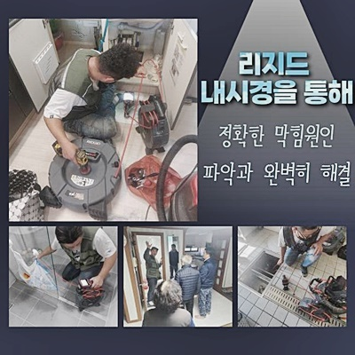
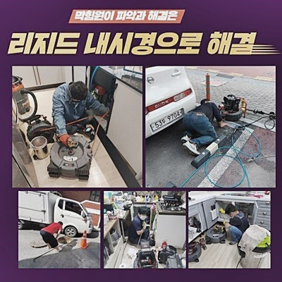
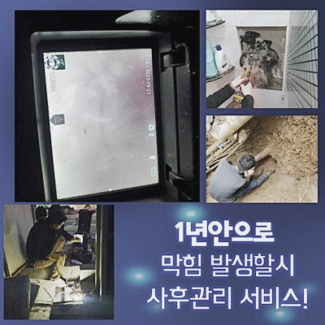
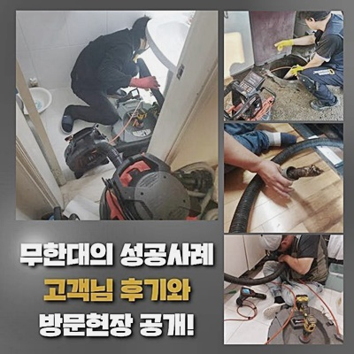
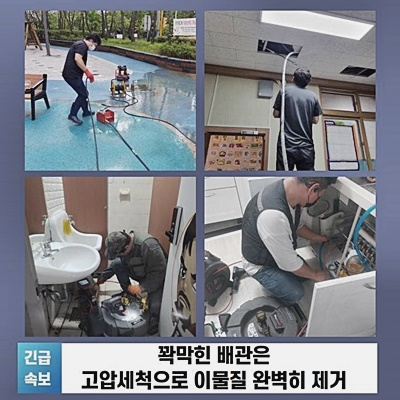
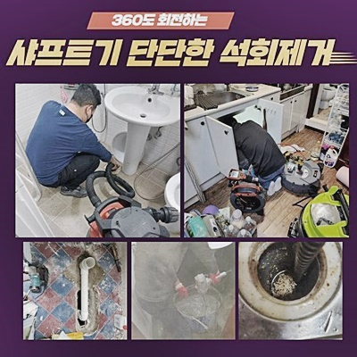
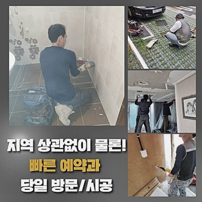

🏠 고양시 창릉동세탁실역류 신원동 맨홀역류 누수
고양 원동 하수구막힘 전문 시공 후기

📋 작업 개요
- 위치: 고양 원동, 원동, 고양
- 서비스 유형: 하수구막힘, 배관막힘, 맨홀막힘, 누수수리, 역류해결, 뚫는업체, 배관청소, 고압세척, 배관보수
- 작업 일시: 2024. 10. 2. 11:11
- 업체명: 하수구수사대 (010-5615-2118)
🔍 문제 상황
고양시 창릉동세탁실역류 신원동 맨홀역류 누수
노폐물로 인해서 생겨난 막힘 이슈는 평온한 하루를 보내는 데에 심각한 어려움을 선사합니다
만약 오수까지 역류한다면 바닥까지도 더럽혀지는 상황이 되어 난감할 수 있어요
손 쓸 방도도 없는 힘든 상황을 보완해서 되돌려드리는 게 저희의 업무입니다
손대기 힘들도록 막막한 상황이 닥쳤다면 고민말고 의뢰를 해주시면 되겠습니다
이번에 알려드릴 케이스는 하수 흐름의 중단과 역행까지도 동시에 솟구쳐올라서 큰일이다 싶어 전화주셨는데요
예고도 없었다고 말하시겠지만 배관 이슈는 오랜기간 머무르던 문제들이 참고 참다가 발현되고 마는 문제입니다
두껍게 겹쳐진 이물들이 배관 내부에 달라붙다가 더이상 못버티게 되면 셧다운되는 것입니다
막힌 부분을 뚫어내 줄 기기들을 바리바리 챙겨서 고객님을 직접 찾아갔습니다
배관에 문제가 생기면 멀쩡한 고객님의 하루를 스톱시켜 버리죠
이번 케이스와 같이 물을 많이 요구하는 특성을 띈 공간이 그렇다면 더욱 불편이 큽니다
하루라도 물을 못 쓴다면 일상을 이어가지 못하는 불편감이 동시에 촉발되므로 더욱 위급하다고 봅니다
많은 인원들이 여러번 물을 폐기하기 때문에 정상적 삶을 영위하는데 장애 요소를 만들 수 있어요
이렇게 빠른 대응과 명확한 솔루션이 적용되어야 하는 명분인 것입니다

🔎 원인 분석
💡 전문가 진단: 정밀 진단 장비를 사용하여 슬러지의 고착 여부를 판명하고 타격/세척 작업을 실시했습니다.
막힘을 만든 원인들을 확실하게 따져봐야 할테지만 현장만 둘러 보더라도 대략적으로 예상해 볼 수 있는데요
많은 증거들을 모아보니 관로에 석회가 끼었다는 점이 주범으로 예상이 되더라고요
파이프로 유입된 대량의 물과 노폐물이 오래 머무른다면 돌같은 석회물질이 배관라인에 말라붙는 게 수순인데요
배관 경로를 체크하고 작업의 계획을 세부적으로 정해줘야 했습니다
경미한 양의 석회만 붙어있는 현황이면 석션만으로 충분하게 제거 작업이 이뤄질 수 있습니다
석회물질이 어마어마하다거나 배관의 긴 부분에 틈도 없이 결합되어 있다면 클리너를 넣어서 조금 풀어주는 게 좋아요
얼마나 안쪽까지 잔존해 있나 알아야 적정한 약물 사용량을 알 수 있으니 미리 탐방하는 절차가 필요했어요
작업을 수행하기 전에 전용 카메라를 활용해서 내부를 탐색하고 적절한 양의 약품을 구멍으로 부었어요
오늘도 내시경 장비로 체크를 해보았는데 진심으로 충격을 받을 정도로 막힌 수준이 심각했어요
석회가 군데군데 붙은 수준을 뛰어넘어 포괄적으로 기다란 형태의 경로가 석회에 점유돼서 빈틈도 보이지 않았어요
여기서 바로 배관 스케일링 단계를 끊지않고 반복했다간 단단한 석회때문에 배관 표면이 데미지를 입습니다
사고를 피하려면 약제를 부어 석회화를 해소한 다음 작업에 돌입해야 합니다
약품 수량이 충분하지 않으면 연화가 충분히 이뤄지지 못해 시공이 어려워질 것이므로 미리 확인하는 것이 중요합니다
준비를 철저히 야무지게 해 놓는다면 더는 거리낌 없이 제거가 가능하게 됩니다!

🔧 작업 과정
매 현장에는 마찬가지로 내시경 장비는 너무 소중하고 반드시 필참해야만 되는 우수한 기기 중 하나로 꼽힙니다
넉넉하게 시간을 할애하여 노폐물이 완전히 녹아내릴 시점까지 차근히 대기 시간을 가졌습니다
덕택에 계획대로 진행해도 데미지를 입히지 않고 완벽하게 제거할 수 있었습니다
유연하게 변해서 조각내기 용이하고 작업 난이도도 용이하기 때문입니다
배수구멍과 가까운 구간이라면 단시간에 작업이 가능합니다
그러나 파이프는 전체를 모두 보기 힘든 깊은 구조기때문에 다양한 방법을 동원해 정돈해야 하죠
특히 배관 구조의 특성을 꿰뚫어 놓아야 손상 없는 방식으로 제거에 특화된 작업을 할 수 있어요
진행해도 될 정도라 보여서 혹시 역류 증세가 생성되지 않게끔 신중하게 배관 세척을 진행했어요
저희는 현장의 막힘을 완벽하게 보수하기 위하여 스케일링을 하는 샤프트 장비를 이용하는 경우가 많습니다
기다란 몸체 끝에 자리한 회전 고리가 돌면서 노폐물을 세분화하는 구실을 해주는 파워가 좋은 기계입니다
하지만 스킬 없이 청소가 실시된다면 배관 몸체가 훼손당하므로 섬세한 감각을 발동해야만 안전합니다
똘똘 뭉친 부분을 안 풀면 완벽하게 제거하는 것이 꽤 어려울 수 있습니다
의뢰인께서는 하수구가 다치진 않을까 불안한 눈빛으로 고민을 하는 기색을 비치셨어요
본작업에 돌입하기 전에 충분히 안내를 드리고 승인을 얻고 작업을 안전하게 시공하게 됩니다
다행스럽게도 아까 넣은 약품으로 손쉽게 차츰 무너지면서 기계로 간편하게 제거했습니다
역류 때문에 지저분해진 육가도 세부적인 부분까지 완벽하게 청소했습니다
통수가 원만하게 이루어지는 것을 보더라도 추가로 통수 검사 시행을 위해 인위적으로 물을 부어봐요
상당한 양의 물들을 일시에 내려보냈는데 막힘없이 시원하게 통하는게 너무나도 분명하게 보였습니다
꽉 막힌 부분을 없애줬기 때문에 이렇게 물이 막히는 느낌 없이 시원스럽게 폐수 과정을 겪게 됩니다
야무지게 파이프라인 정돈을 담당해 드렸으므로 조만간 안전한 사용이 이어지겠지만 향후에는 석회화된 물질이 슬금슬금 생겨날 텐데요
하수시설은 제아무리 깨끗하게 쓰려고 노력해도 어쩔 도리 없이 이물이 쌓이는 특성이니 주기적 청소를 실시해야합니다
물의 절대적 이용량이 많으면 하수구의 고장이 빈번하게 나타나게 되는 게 당연지사입니다
규칙을 두고 배관로가 전문 검진을 의뢰해야 하며 고장이 나지 않았더라도 세척 서비스를 이용하시는 것을 제안 드리고 싶어요


✅ 작업 완료
하수 시스템은 이용 고객의 사려 깊은 이용과 관심이 필수로 요구되는 시설물이죠
초기 증상이 나타날 때 조처한다면 빠르고 간편하게 해결 가능합니다
간단한 장비로만 힘겹게 연명하고 있다면 결국엔 참사가 일어날 수 있어요
배수가 천천히 되는 상태를 느끼시거나 그 외의 이슈가 생겼다면 언제든지 말씀해 주세요
매우 복잡한 상황에 봉착했다고 하더라도 저희의 전문성으로 문제없이 처리할 수 있음을 알리고 싶습니다
휴일이나 명절이라도 방문을 할 수 있으니 혹시 문제있으면 전화주시고 계속될 블로그 글도 관심을 가져주시길 바랍니다




⚠️ 베란다 누수 및 방수 관리 방법
- ✅ 비가 많이 올 때 창틀 주변이나 아래층 천장에 얼룩이 생기는지 정기적으로 확인해 보세요.
- ✅ 우수관 주변 실리콘 마감이 들뜨거나 깨진 틈새가 있는지 손상 여부를 수시로 체크하세요.
- ✅ 베란다 바닥 타일의 줄눈(메지)이 소실되면 그 틈으로 물이 침투하여 누수가 유발됩니다.
- ✅ 누수 의심 증상 발견 시 방치하면 아래층 손실이 커지므로 즉시 전문가의 진단을 받으십시오.
💡 핵심 정리
- 확실한 장비 작업(내시경 점검 및 샤프트 스케일링)으로 원인을 뿌리 뽑습니다.
- 작업 후 1년 이내에 동일한 부위 재발 시 100% 무상 A/S 서비스를 보장합니다.
- 서울 · 경기 · 인천 전 지역에 24시간 언제든 긴급 출동할 수 있도록 항시 대기 중입니다.
❓ 자주 묻는 질문 (FAQ)
🚨 고양 원동 하수구막힘 문제로 고민이신가요?
정확한 원인 진단과 확실한 시공으로 재발 없는 해결을 약속드립니다.
24시간 긴급 출동 | 서울 · 경기 · 인천 전지역 | 1년 내 재발 시 무상 A/S